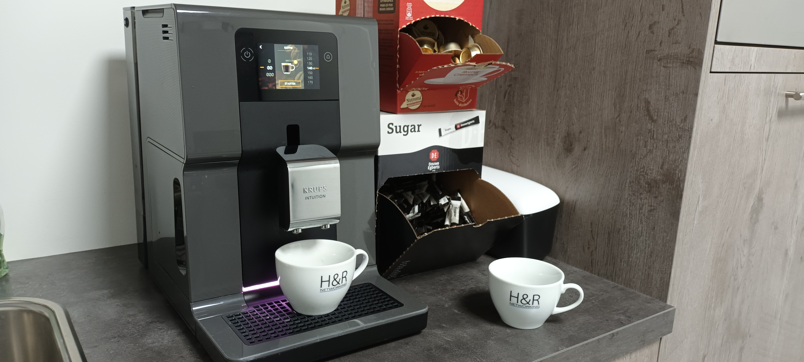
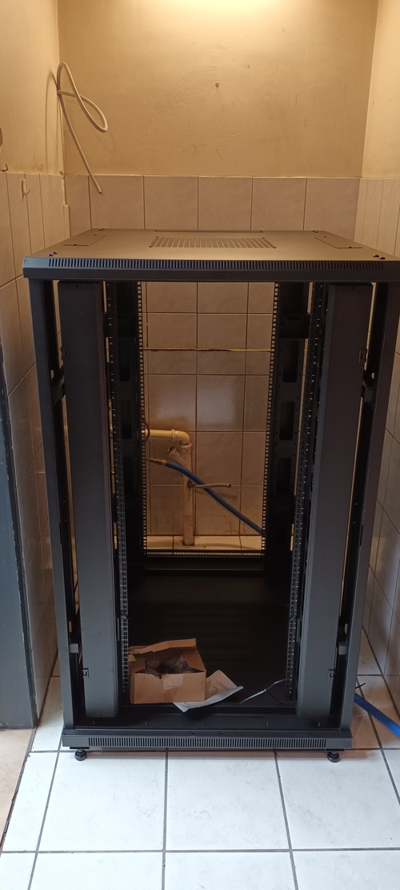

Voormiddag
De dag begon net zoals anders vandaag weer om 8:30u, maar voor we aan onze dag begonnen namen we alvast een tas koffie.
Ook vandaag werkte ik weer samen Brend. De dag begon rustig tot er opeens meerdere telefoons binnenkwamen.
De telefoons gingen over problemen met de microsoft apps en taakbalk, niemand wist hoe dit kwam. Hier zijn wij heel de voormiddag mee bezig geweest.
Uiteindelijk bleek het probleem te liggen aan een software die veel bedrijven gebruiken genaamd "ClickShare". Deze ging in conflict met windows door bepaalde dingen in het register aan te passen.
Toen was het weeral middag, ik nam van 12:10 tot 12:30 pauze. Toen kwam Hilde aan me vragen of ik het zag zitten om Xander te gaan helpen met het plaatsen van een serverkast.
Namiddag
Het grootste deel van de namiddag bestond uit het plaatsen van de serverkast. Dit was een hele klus aangezien de kast met boven- en onderplaat te breed was om door de deuren te passen.
We hebben de boven- en onderplaat van de kast gehaald, hierdoor paste de kast net door de deurgaten. De kast was 78,8cm breed en het deurgat 80cm wat ons dus met 1mm speling overliet langst elke kant.
Eens ik en Xander terug aankwamen op kantoor bleken Kevin en Brend een oplossing gevonden te hebben voor het probleem met Clickshare. Aan de hand van een script konden zij het probleem oplossen door het script in te voeren in een terminal.
Hieronder een foto van de geplaatste serverkast:
Als ik de dag in 1 woord zou omschrijven zou ik deze omschrijven als: "probleemoplossend" vanwege het zoeken naar een oplossing voor het probleem met de microsoftapps en de taakbalk.